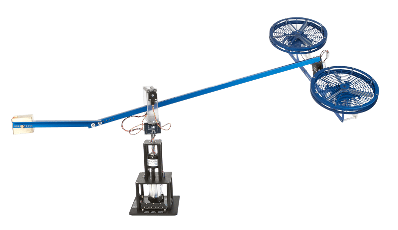
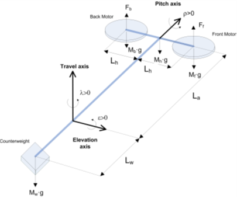
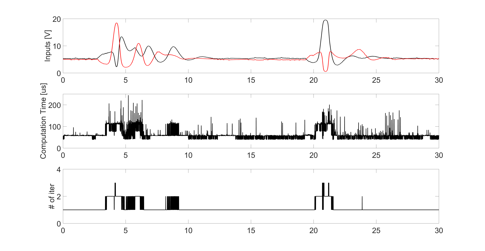
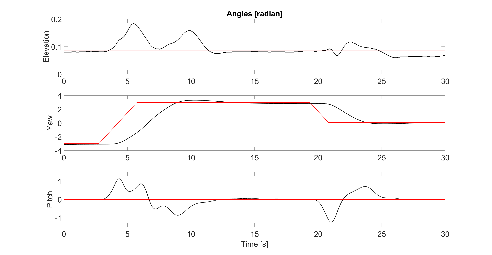

Helicopter
Example
Helicopter/
Where you can find this helicopter
Quanser website. 3 DoF Helicopter.
Model:
Benchmark model of Quanser’s 3 DOF Helicopter - 2018
Problem Description
 
-
The state vector of the helicopter is x = [q,\dot{q} ]^{T}\in\mathbb{R}^{6}, where q = [\epsilon,\rho,\lambda]^T is the vector of the elevation angle, pitch angle, and yaw angle. The pitch angle \rho is set to be |\rho|\leq 1.
-
The input vector is u=[V_f,V_b]^T, where V_f is the voltage on the front motor and V_b is the voltage on the back motor. The control input is bounded by [0,0]^T \leq u \leq [20,20]^T.
-
The dynamics of the helicopter are given by the following equations:
The task is to control the helicopter to track a given yaw reference.
OCP in ParNMPC
The state constraints are softened by introducing a slack variable \rho_s.
The underlying OCP defined in ParNMPC is formulated as:
- State: x=[\epsilon,\rho,\lambda,\dot\epsilon,\dot\rho,\dot\lambda]^T.
- Input: u=[V_f,V_b,\rho_s]^T with u_{max}=[20,20,\infty]^T and u_{min} = [0,0,0]^T.
- Parameter: p=[Q_d,R_d,x_{ref},\gamma]^T, where Q_d and R_d are tuning parameters, x_{ref} is the varying reference, and \gamma>0 is the barrier parameter.
- Cost function L(u,x,p) = L_{tracking}(u,x,p) + L_{penalty}(u,x,p), where L_{tracking}(u,x,p) = \frac{1}{2}\|x-x_{ref}\|_{Q_d}^2+\frac{1}{2}\|u-u_{ref}\|_{R_d}^2 and L_{penalty}(u,x,p)=1000\rho_s^2 is the penalty function.
- Polytopic function (linear constraint): G = [\rho - \rho_s, \rho + \rho_s]^T with G_{max}=[1,\infty]^T and G_{min} = [-\infty,-1]^T.
- f(u,x,p) is shown before.
- Prediction horizon T=4 s.
- Number of the discritization grids N=48.
- Discretization method: Euler.
Experiment settings:
- CPU: i7-8700K.
- MATLAB R2015b + Microsoft Visual C++ 2015 (C)
- Tolerance: 1e-4.
- DoP: 4.
- Hessian approximation method: Newton.
Closed-loop control using ParNMPC
Step 1. NMPC problem formulation
See Workflow of ParNMPC > NMPC Problem Formulation.
Example
Helicopter/NMPC_Problem_Formulation.m
Step 2. Code generation and deployment in Simulink
See Workflow of ParNMPC > Code Generation and Deployment > Simulink.
-
Code generation
Example
Helicopter/Simulink_Setup.m -
Deployment
Example
Helicopter/Deploy_Simulink_R2015b.slxAdd
-openmpto the makefile provided by Quanser.
Experiment results (left: first 15 seconds; right: last 15 seconds):



